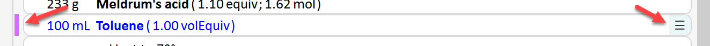
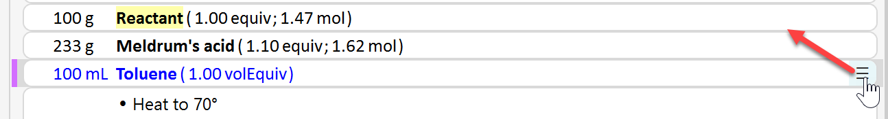
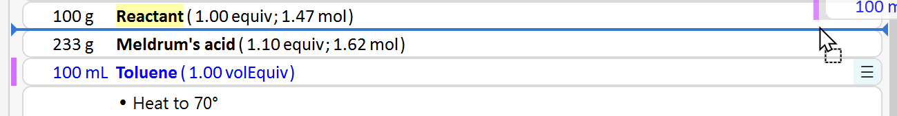
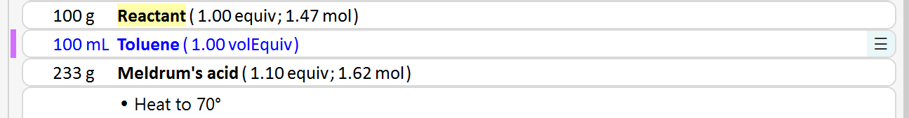
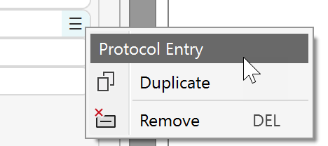
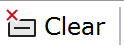

8) Manage Protocol Elements
Select Protocol Elements
Clicking a protocol element selects it for editing, rearrangement or deletion. A selected protocol element is marked by a colored marker line to its left, and a drag area to its right (see below).

The current selection is cleared by pressing the ESC key, or by clicking into an empty protocol area.
Tip 1 To select a material entry (reagent, solvent, etc.) without opening its material dialog, just click into the empty space between its text and its right edge.
Tip 2 When repeating an experiment, you can use the marker line to easily locate your current operation. Use the keyboard arrow keys to move the current selection up or down, provided the current element is not in text edit mode.
Rearrange Protocol Elements
Protocol elements can be rearranged via drag/drop. Assume you'd like to move the "Toluene" entry in the following example to insert it below the "Reactant" entry:
- Select the "Toluene" entry, go to its drag area and start dragging the entry upwards:

- Move the dragged item until the insert line appears at the location you'd like to insert it into.

- Release the mouse button to insert the item.

Protocol Element Context Menu
Right-click the drag area to the right of any protocol element to display the context menu below:

- Duplicate: This option is only is available for materials (reagents, solvents, etc.). It copies the current material and places the resulting duplicate right below it. You may then drag/drop the duplicate to the desired location in the protocol. This is a time saver when utilizing multiple portions of the same material, e.g. an organic solvent during multiple extractions.
- Remove: Deletes the current protocol entry. - Alternatively, you can also use the DEL key, provided the current protocol item is not in text edit mode. In such case, this will just delete a character in the text being edited. To leave text edit mode, just click the drag area to the right of the protocol entry.
Clear Protocol
To delete all protocol elements at once, with the exception of the reference reactant, just click the Clear button located in the main toolbar. Note that the reference reactant will not be removed since it is coupled to the reaction sketch.

This operation is useful for restarting an experiment from scratch.